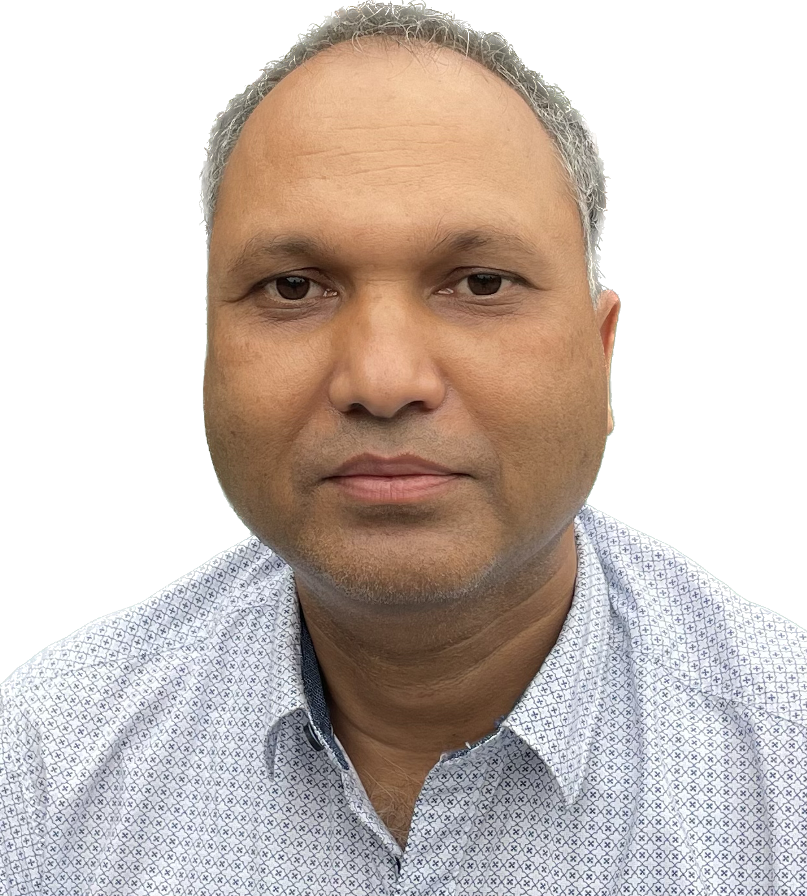

Dr. Rustam Ali Ahmed
Ph.D. (Computer Science & Engineering)
Director – RWorld Computer Solutions (OPC) Pvt.
Ltd.
↗
Assam, India |
+91 7002453818 |
ahmed.rustam77@gmail.com
Download PDF
Profile Summary
Experienced Computer Science academician with 19+ years of teaching, research, and academic leadership.
Expertise in Artificial Intelligence, medical image analysis, and cloud-based systems.
Strong track record in Ph.D. supervision, publications, and development of large-scale academic
platforms.
Research Interests
- Artificial Intelligence & Machine Learning
- Medical Image Analysis & Biometrics
- Cloud Computing & Distributed Systems
- Data Analytics & Smart Systems
Education
- Ph.D., Computer Science & Engineering, Tezpur University, 2018
- M.Tech., Information Technology, Tezpur University, 2005
- M.Sc., Mathematics, Tezpur University, 2003
- PGDCA, Gauhati University, 2001
- B.Sc. (Hons), Mathematics, Gauhati University, 1998
Academic Experience
Sikkim Manipal Institute of Technology (SMIT)
- Assistant Professor (Selection Grade): 2020–2025
- Assistant Professor-I: 2017–2020
- Lecturer / Assistant Professor-II: 2005–2017
Research Supervision
Ph.D. Scholar: Ashis Datta (Ongoing)
Topic: Computer-Aided Prediction of Brain-Related Diseases using Radiology Images
Status: Thesis under submission
Key Projects
- Online Proctored Examination System (5000+ users)
- Online Admission System
- Learning Management System
- Student Information System
Publications
Journal Papers
- Rustam Ali Ahmed, Bhogeswar Borah, “Triangle Wise Mapping Technique to Transform
One Face Image into Another Face Image,” International Journal of Computer Applications, vol. 87,
no. 6, pp. 1–8, 2014.
- Rustam Ali Ahmed, Bhogeswar Borah, “An Iterative Search-Based Technique to Find or
Predict Older Face Images of a Child,” International Journal of Computer Applications, vol. 151, pp.
1–6, 2016.
- Shubhraleena Chowdhury, Rustam Ali Ahmed et al., “Study on the Impact of Internet
Technologies in Medical Science,” 2015.
- Shrija Sanjana, Rustam Ali Ahmed et al., “Comparative Studies on Iris Recognition
System,” 2016.
- Pritikana Sen, Rustam Ali Ahmed et al., “A Study on E-Commerce Security Issues and
Solutions,” 2015.
Conference / Book Chapters
- Rustam Ali Ahmed, B. Borah et al., HIMIC: A Hierarchical Mixed-Type Data
Clustering.
- Ashis Datta, Rustam Ali Ahmed et al., “PIRNet: Deep Neural Network for Brain MRI
Segmentation,” ASCIS 2024.
- Ashis Datta, Rustam Ali Ahmed et al., “Alzheimer Disease Detection using
MobileNetV2 Integrated with Vision Transformer,” ICMEET 2024.
- Ashis Datta, Rustam Ali Ahmed et al., “Automated Multi-Class Brain Glioma
Segmentation,” ICDSC 2024.
- Ashis Datta, Rustam Ali Ahmed et al., “SLesionNet: Transformer-Based Stroke Lesion
Segmentation,” SCI Journal (Under Review 2026).
Technical Skills
Python
Java
C/C++
AWS
Docker
Kubernetes
React
Django
Awards & Recognition
- Dr. T.M.A. Pai Overall Excellence Award (2020) – Best Employee across constituent
colleges of SMU
- Best Employee Award (2020) – Sikkim Manipal Institute of Technology (SMIT)
- Finalist, National Awards for e-Governance (2020–21) – Department of Administrative
Reforms & Public Grievances, Government of India
© 2026 Dr. Rustam Ali Ahmed